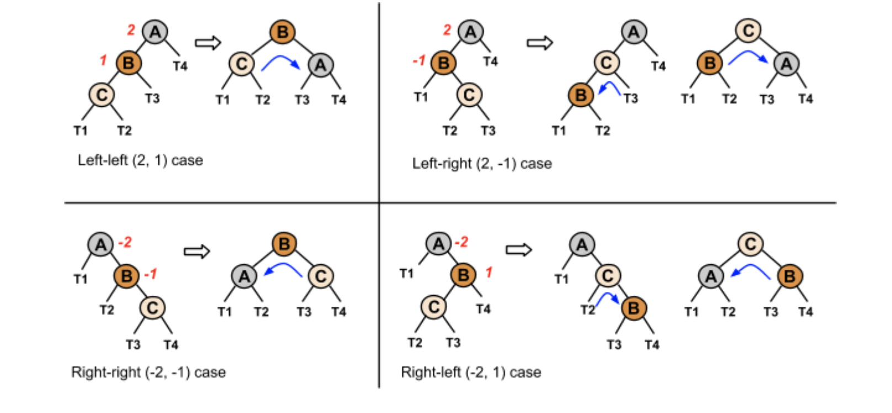

<<<<<<< HEAD
AVL tree 是一棵树，一颗有强迫症的树，树上的每一个结点都是平衡的。
AVL 是一个每一个node 都平衡过的 二叉树。
A node’s balance factor is the left subtree height minus the right subtree height, which is 1, 0, or -1 in an AVL tree.
=======
Intro
- each node has one key and up to two children.
- A B-tree with order K is a tree where nodes can have up to K-1 keys and up to K children.
The order is the maximum number of children a node can have.
Ex: In a B-tree with order 4, a nodes can have 1, 2, or 3 keys, and up to 4 children.
Order 是每个node 可以拥有的最大 children 的个数。
Insertion
Given a new key, a 2-3-4 tree insert operation inserts the new key in the proper location such that all 2-3-4 tree properties are preserved.
New keys are always inserted into leaf nodes in a 2-3-4 tree. Insertion returns the leaf node where the key was inserted, or null if the key was already in the tree.
An important operation during insertion is the split operation, which is done on every full node encountered during insertion traversal.
The split operation moves the middle key from a child node into the child’s parent node.
The first and last keys in the child node are moved into two separate nodes. The split operation returns the parent node that received the middle key from the child.
核心思想是: the middle value is moved up into the parent node.
Splitting an internal node allocates 2 new nodes, each with a single key, and the middle key from the split node moves up into the parent node.
Splitting the root node allocates 3 new nodes, each with a single key, and the root of the tree becomes a new node with a single key.
插入1个 node 有三种情况:
- New key equals an existing key in node: No insertion takes place, and the node is not altered.
- New key is < node’s first key : Existing keys in node are shifted right, and the new key becomes node’s first key.
- Node has only 1 key or new key is < node’s middle key: Node’s middle key , if present, becomes last key, and new key becomes node’s middle key.
- None of the above : New key becomes node’s last key.
0a69ec48247cd4113c95783ef494624e816a76d1
Insert
A rotation is a local rearrangement of a BST that maintains the BST ordering property while rebalancing the tree.
旋转帮助 tree 保持其平衡状态。
插入方式 描述 旋转方式
LL 在a的左子树根节点的左子树上插入节点而破坏平衡 右旋转
RR 在a的右子树根节点的右子树上插入节点而破坏平衡 左旋转
LR 在a的左子树根节点的右子树上插入节点而破坏平衡 先左旋后右旋
RL 在a的右子树根节点的左子树上插入节点而破坏平衡 先右旋后左旋
right/left rotation:
把从 root 开始，依次向下计算，找到第一个不平衡的node， 将其向右旋转，成为原本子node 的子node，然后将新形成的 子树的root 连到总root 上去。
double rotation
如果字树的新root变成字节点而原有的左/右结点已经被占据，那么就需要两次旋转：先将子树的子树旋转，然后再将子树旋转一下。
加起来一共有四种状况：
上半图是原来子树的情况，下半是新插入的结点。
以下是四种插入方式，

Remove
红黑树
主要有以下性质:
- 每个node 有两种颜色
- root 颜色一定是黑的
- 红色 node 的 children 一定是黑的
- null 是黑的
- 从一个node 到null 的路径上有相同个数的
Insert algorithm
假设当前 Node 的上级是parent， 然后上级的上级是grandparent， uncle 应该是 grandparent 的另一个孩子。
- node 是 toot 那就直接涂黑。
- 如果parent 是黑的，直接退出。
- 如果parent 和uncle 都是红的，那么将parent 和uncle 涂黑，grandparent 涂红。
- 如果node 是parent的右孩， 并且parent 是左孩，then rotate left at parent, update node and parent to point to parent and grandparent, respectively。
- 如果node 是左孩，parent 是右孩，then rotate right at parent, update node and parent to point to parent and grandparent, respectively, and goto step 7.
- 7: parent 变黑，grandpa 变红。
- If node is parent’s left child, then rotate right at grandparent, otherwise rotate left at grandparent.